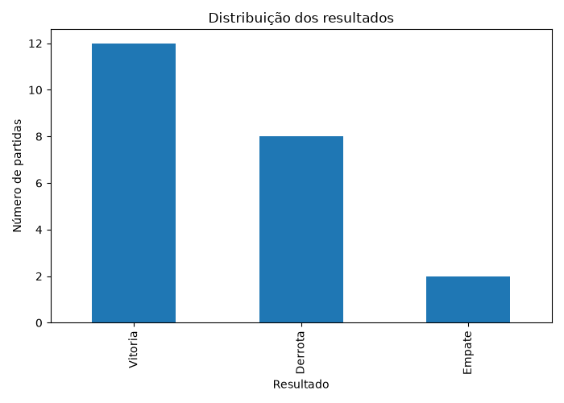
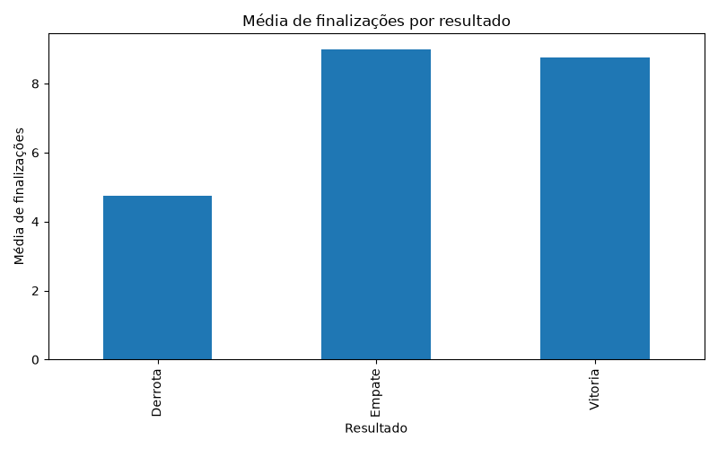
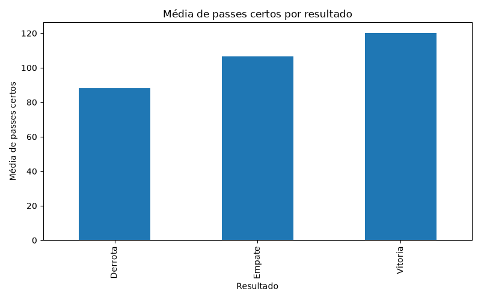
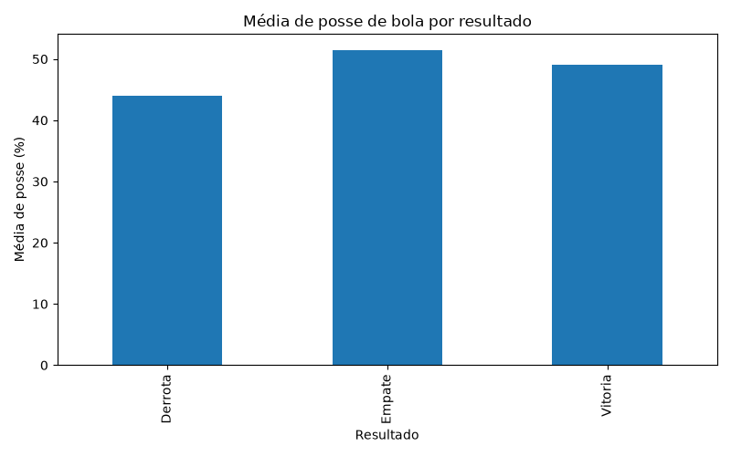
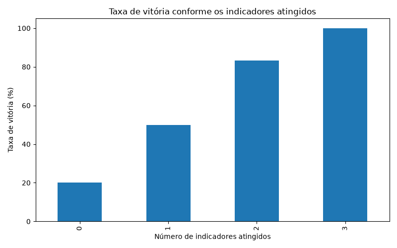

PROJETO DE ANÁLISE DE DADOS
Análise de Desempenho no eFootball
Quais indicadores aparecem associados às vitórias?
Ver resultadosIndicadores associados às vitórias
Principais resultados
Visualizações
Desempenho por resultado





Conclusão
Dentro da amostra analisada, as vitórias aparecem associadas principalmente a maior quantidade de finalizações, maior número de passes certos e maior posse de bola.
O indicador que apresentou a associação mais forte foi o número de passes certos: nas 8 partidas com 120 ou mais passes certos, todas terminaram em vitória.
Tecnologias utilizadas
- Python
- Pandas
- Matplotlib
- HTML
- CSS
- JavaScript
- Git
- GitHub